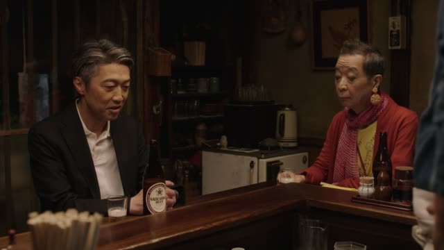
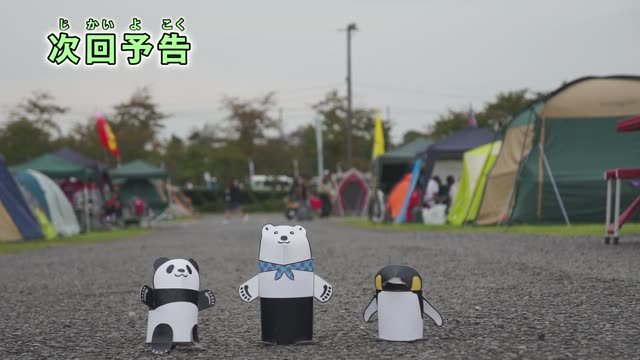
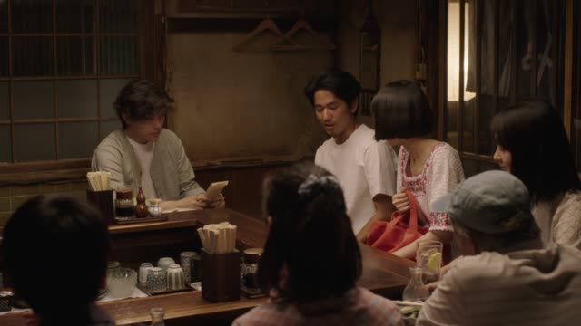

～とき (時)

NHK やさしいことばニュース · 暑い日が続く 熱中症に気をつけて
たくさん汗が出たときは、塩分をとってください。
"When you've sweated a lot, have some salt." [hot weather advice]
とき means when: it marks the moment something else happens. 汗が出たとき = when you've sweated.
Put it after a plain verb, like a noun with a description: 出た + とき. On this card, it answers "When should I have salt?": when you've sweated a lot.
With a noun, add の: 子供のとき (when I was a kid). With a な-adjective, な: 暇なとき. Politeness only shows at the end of the sentence.

Shirokuma Cafe · Episode 4
そういう時もあるね。
"There are times like that."
時 works like a noun, so it can take particles like も. On this card, そういう時 ("times like that") + も + ある = "there are times like that".
Quick Examples
Telling a friend about growing up.
子供のとき、よく川で遊んだ。
"When I was a kid, I often played in the river."
Noun + の + とき.
CasualGetting to know a coworker.
暇なときは、何をしますか。
"What do you do when you have free time?"
な-adjective + な + とき.
PoliteYour mom reminds you.
寝るとき、電気を消してね。
"Turn off the light when you go to bed."
Dictionary form: right as it happens.
CasualTalking about a trip.
日本に行ったとき、富士山を見ました。
"When I went to Japan, I saw Mt. Fuji."
Past form: it already happened.
PoliteWith and without
雨が降ります。家にいます。
"It rains. I stay home." Two separate facts.
雨が降るときは、家にいます。
"When it rains, I stay home." The first part says when.
Examples from Media

Midnight Diner: Tokyo Stories · Season 2, Episode 5
そのときに借金のことも聞きました。
"That's when I also heard about the debt."
そのとき = "at that time". とき + に pins the moment.

YouTube · video
これは、熱が出た時に体温を測るための機械です。
"This is a device for taking your temperature when you have a fever."
時 is とき in kanji.
Princess Mononoke
はい、タタリ神に矢を射る時、心を決めました。
"Yes. When I shot the arrow at the demon god, I made up my mind."
Verb (射る, shoot) + 時 = "when I shoot". 心を決める = make up your mind.
1 Litre of Tears · Episode 7
病気のことを話した時、言われました。
"When I told them about the illness, that's what they said."
Past verb + 時: "when I told". 言われる = "be told".
Kotaro Lives Alone · Episode 6
彼に問い詰められた時は違うと言い続けたんです。
"When he pressed me, I kept saying it wasn't true."
時は makes the moment the topic: "as for when he pressed me".

Source unknown No source
晩ごはんのとき、さっそく食べてみました。
"At dinner, I tried it right away."
Noun + の + とき.

Shirokuma Cafe · Episode 34
遅刻した時にさぁ。
"When I was late..."
Past + 時: when it happened.

Midnight Diner: Tokyo Stories · Season 2, Episode 8
体力あるときは。
"When you've got the energy..."
Further Reading
A Dictionary of Basic Japanese Grammar
Entry "toki" · pp. 490–494